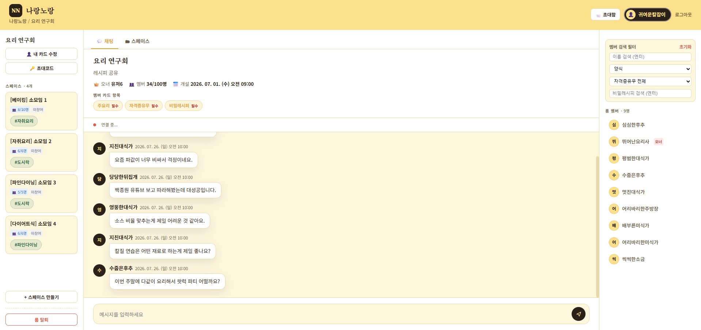
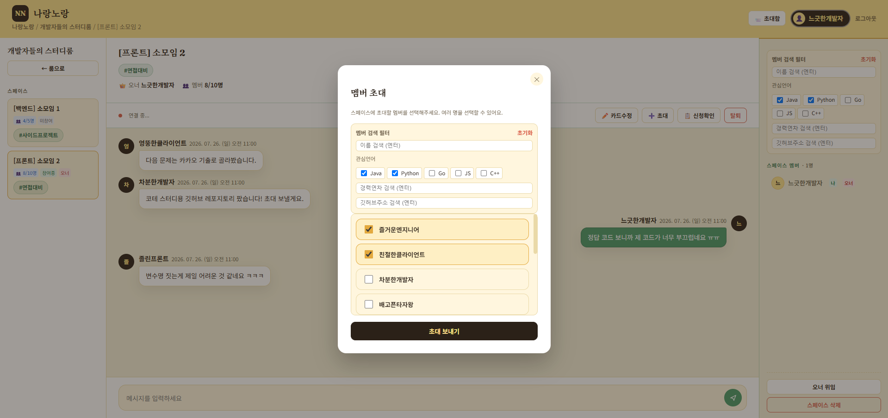
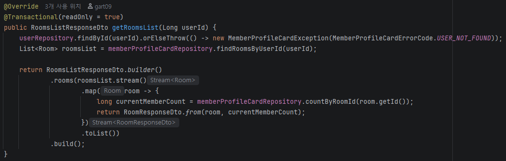
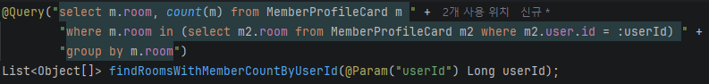
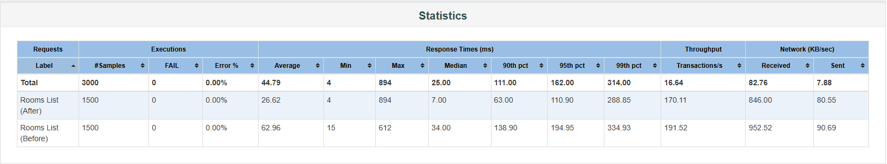

나랑노랑 (NarangNorang)
2026.07.17 - 2026.07.27
Java
Spring Boot
JPA
MySQL


프로젝트 목표
- 공통된 관심사를 바탕으로 팀빌딩 및 소통을 할 수 있는 커뮤니티 플랫폼 개발
개인적 목표
- 부트캠프를 진행하며 배운
Spring Boot기술(Spring Security,Jwt,Jpa등) 적용 - 배포 및 실제 서비스를 진행하며 유저 반응 및 성능 테스트 진행
프로젝트 기획 의도
- 부트캠프를 진행하며 팀빌딩이 랜덤으로 이루어져 팀원들의 특징을 알기 어려웠음
- 수강생들의 특징을 미리 알고 팀 빌딩을 할 수 있으면 어떨까?란 아이디어로 출발
- 좀 더 확장해서 동아리, 회사 레크레이션, 부트캠프, 동호회 등 팀빌딩을 원하는 어느곳에서든 사용할 수 있는 범용적인 플랫폼 구상
내가 기여한 부분
- 룸 내에서 유저들의 특징을 표현할
MemberProfileCardCRUD 작업 - JPA 및
Querydsl를 이용해MemberProfileCard필터링 기능 구현 WebSocket과STOMP를 이용한 룸 및 스페이스(룸 내의 소모임 개념) 채팅 구현
프로젝트 종료 후 고찰
협업 관련 이슈
[문제] 검증 없는 코드 리뷰로 인한 개발 병목
- 코드 리뷰 시 눈대중으로 확인하고 승인하여 코드 간 통합 과정에서 다수의 오류 발생
- 오류 수정 작업으로 상당한 시간 소요, MVP 수준을 넘어가는 추가 기능 구현 기회를 놓침
[개선책]
- PR 템플릿을 상세화하여 변경사항을 명확하게 작성하게 하고, 리뷰어가 집중적으로 테스트해야 할 포인트를 명시하도록 강제
- 작성자가 직접 동작을 확인하였다는 시연 스크린샷 혹은 동영상을 필수 첨부하도록 하여 머지 전 최소한의 QA를 실행하도록 강제
[문제] 불명확한 Git 히스토리 및 커밋 작성
- 규칙을 정했으나 대소문자 혼용, 작성 양식 등 팀원별 스타일이 달라 히스토리 가독성이 떨어짐
- 개발 중반 이후에야
Squash Merge를 도입해 이전에 사소한 커밋 기록이 과다하게 남음 - 깃 허브 커밋 목록이 통일화되지 못했었음
[개선책]
Git Hook을 사용하여 커밋 생성 시 메시지 컨벤션을 자동 검증, 양식을 통일- 프로젝트 최초 설정 시 레포지토리 설정에서
Squash Merge만 허용하여 깔끔한 커밋 히스토리를 남기도록 강제
아키텍처 및 기술 이슈
[문제] Entity 간의 연관 관계 및 결합도가 최적으로 설계되지 않음
- 최초 기획 때 Entity간의 관계를 명확하게 설정하지 않아, 코드를 작성하며 계속해서 Entity의 구조 및 연관관계가 변경됨
[개선책]
- 최초 기획 때 연관관계를 확실하게 정하기
- 느슨한 결합을 위한 ID참조, 중간 매개 객체를 두어 서로의 코드의 영역을 침범하지 않도록 하기 등 어떻게 구현할 것인지 사전에 협의 후 작성
[문제] 성능 이슈의 실제 영향도를 검증하지 못함
- 코드 리뷰 중
N+1과 같은 잠재적 성능 이슈를 발견하더라도, 실사용 트래픽 규모에서 이것이 실제로 얼마나 성능에 영향을 주는지 정량적으로 검증할 방법이 없었음
[해결방안]
- 방 목록 조회 API에서
N+1쿼리 패턴을 발견(유저가 속한 방 목록을 조회한 뒤, 방마다 인원수를 세는 쿼리를 추가로 보냄) JMeter로 실사용 트래픽을 재현하는 부하테스트를 진행해,N+1쿼리가 실제 응답속도에 미치는 영향을 정량적으로 확인GroupBy로 방 목록 조회 및 인원수 조회를 한번에 처리하도록 쿼리를 통합JMeter를 사용, 150명의 동시 유저가 다음 시나리오를 수행- 시나리오: 회원가입 → 로그인 → 방 생성 20개 + 참여 → 방 목록 조회 10회 반복
- 결과
- 평균 응답시간은 58% 단축, 중앙값은 80% 단축됨
- 비즈니스 로직, 쿼리 작성이 서비스의 품질에 끼치는 영향을 실측 결과로 확인
- 이후 프로젝트에서 쿼리 작성 시 해당 쿼리 성능 개선 여부를 항상 확인할 것


